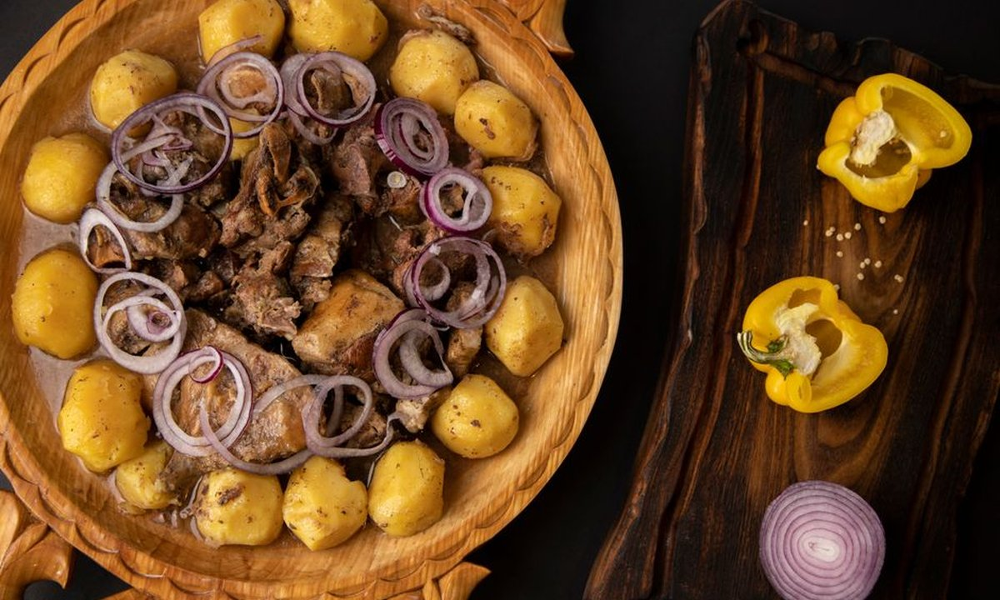
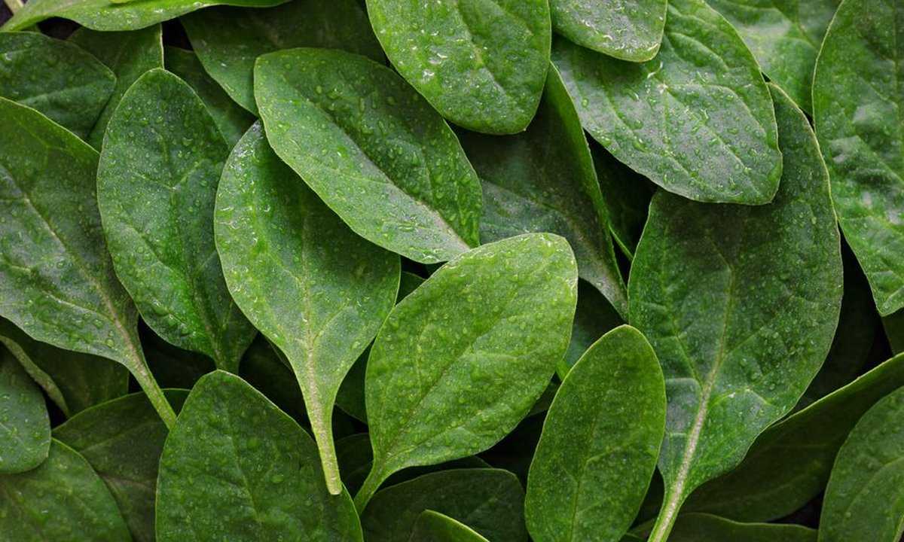

건강·영양 · 원인 모를 피로 뒤에 숨은 '철분 부족'

훈련량은 그대로인데 자꾸 지치고, 안색이 창백하며, 예전보다 쉽게 숨이 찬다면 — 체력 문제가 아니라 철분 부족(빈혈)일 수 있습니다. 철분은 산소를 근육으로 실어 나르는 헤모글로빈의 핵심 재료라, 부족하면 지구력과 회복이 가장 먼저 무너집니다. 특히 성장기 선수는 여러 이유로 철분이 잘 빠지고 많이 필요해, 운동선수 중에서도 위험군입니다.
이렇게 '많이 쓰고 잘 빠지는데 자주 부족하게 먹는' 조합이 스포츠 빈혈로 이어집니다.
이런 증상이 지속되면 스스로 판단하지 말고 병원에서 혈액검사(헤모글로빈·페리틴)로 확인하는 것이 정확합니다. 특히 페리틴(저장 철)은 빈혈로 진행되기 전 '철분 고갈'을 먼저 알려주는 지표예요.
| 구분 | 대표 식품 | 흡수율 |
|---|---|---|
| 헴철 (동물성) | 붉은 살코기, 간, 닭·생선, 달걀노른자 | 높음 (약 15~35%) |
| 비헴철 (식물성) | 시금치, 콩·두부, 렌틸콩, 견과, 강화 시리얼 | 낮음 (약 2~10%) |
채식 위주 식단이라면 비헴철 흡수율이 낮아 더 많은 양과 흡수 전략이 필요합니다.

우유는 칼슘 때문에 성장기에 꼭 필요하지만, 철분이 중요한 끼니(고기·콩 반찬)와는 시간차를 두는 게 좋아요. 예를 들어 우유는 간식 시간에, 고기·나물은 식사 때 먹는 식으로 나누면 둘 다 챙길 수 있습니다.
철분은 부족해도 문제지만 과잉도 해롭습니다. 결핍이 확인되지 않은 상태에서 임의로 철분제를 먹으면 변비·복통·구역 등 부작용이 생기고, 드물게 철 과잉이 될 수 있습니다. 반드시 혈액검사로 결핍을 확인한 뒤, 전문의 처방·용량에 따라 복용하세요. 대부분의 경우는 식이 개선만으로도 충분히 좋아집니다.
원인 모를 피로·창백함·지구력 저하가 이어진다면 철분 부족을 의심하세요. 해법은 헴철(고기·생선) + 비헴철(콩·채소) + 비타민C 조합, 그리고 우유·차·커피는 시간차를 두는 것. 증상이 뚜렷하면 검사가 먼저입니다. 잘 나르는 몸이 잘 뛰는 몸입니다.
💧 함께 보기: 수분·전해질 관리 →